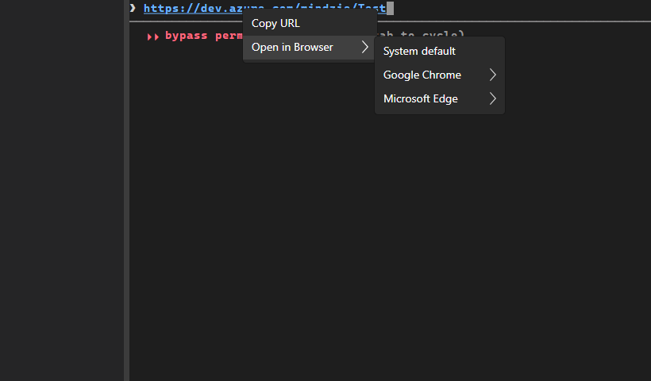
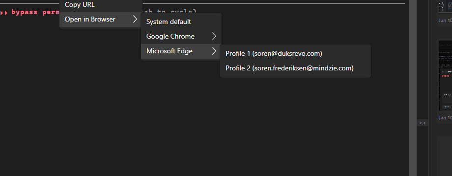
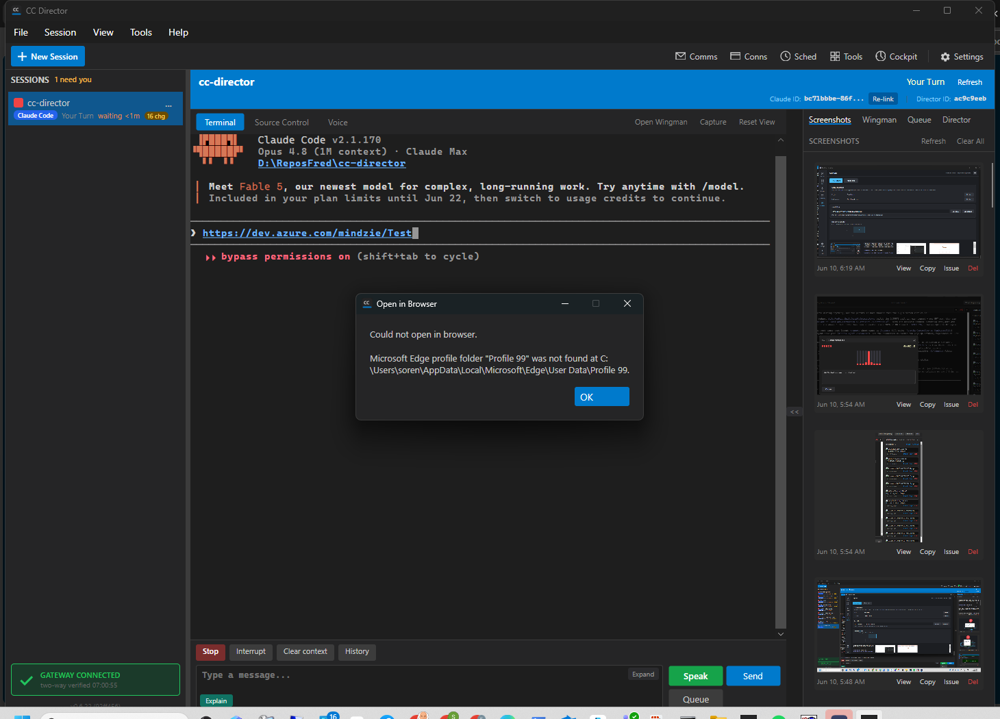
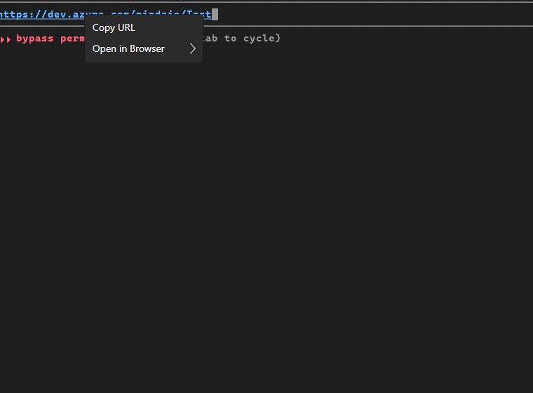

The desktop terminal's single "Open in Browser" right-click action (which only opened the OS default browser) is replaced with a parent menu item that expands to System default plus each installed Chromium browser (Chrome, Edge). Each browser expands to its real profiles, read live from that browser's Local State profile.info_cache and labeled by friendly name (with account). Choosing a browser+profile launches that exact profile via the documented --profile-directory flag and remembers the choice; a plain click on the parent reopens the remembered default. The default persists in config.json under browser.default. Both http(s) URLs and local .html/.htm paths use the same chosen browser. A missing remembered/selected exe or profile folder surfaces a clear error and never silently falls back.
src/CcDirector.Core/Browsers/BrowserLauncher.cs (new) - detect browsers, parse info_cache profiles (account/named-first sort), launch with --profile-directory, throw on missing exe/profile.src/CcDirector.Core/Browsers/BrowserDefaultStore.cs (new) - load/save the remembered default in config.json; resolve a stored exe back to an installed browser.src/CcDirector.Terminal.Avalonia/TerminalControl.cs - build the submenu for URL and html paths; launch helpers; BrowserLaunchFailed event.src/CcDirector.Avalonia/MainWindow.axaml.cs - surface BrowserLaunchFailed via the dark-theme MessageBox.src/CcDirector.Core.Tests/Browsers/BrowserLauncherTests.cs (new) - 10 unit tests for parsing, sorting, account fallback, and missing-target throws.dotnet build src/CcDirector.Core/... Build succeeded. 0 Warning(s) 0 Error(s) dotnet build src/CcDirector.Terminal.Avalonia Build succeeded. 0 Warning(s) 0 Error(s) dotnet build src/CcDirector.Avalonia Build succeeded. 0 Warning(s) 0 Error(s) dotnet build src/CcDirector.Core.Tests Build succeeded. 0 Warning(s) 0 Error(s) dotnet test --filter BrowserLauncherTests Passed! - Failed: 0, Passed: 10, Skipped: 0, Total: 10
The full-solution build's only 2 errors were file-lock copy failures in CcDirector.Cockpit (the user's running cc-director-cockpit process locks CcDirector.Gateway.Contracts.dll) - an environment lock, not a compile error, and Cockpit is not touched by this change. Per CLAUDE.md rule 0 the running process was not killed. Every project this change actually touches builds clean (0/0).
Two layers: (1) a runnable slot-5 test Director launched via the cc-director-launch scheduled task and driven with the Control API + synthetic mouse input for live screenshots; (2) deterministic exercise of the exact production code paths (BrowserLauncher/BrowserDefaultStore) against the real machine, capturing the actual ProcessStartInfo handed to the OS.
Live: right-clicking... left-clicking the URL opens "Open in Browser", which expands to System default + Google Chrome + Microsoft Edge; Edge expands to its two profiles labeled by display name + account.


Deterministic enumeration on the dev machine matches the issue's reference tables exactly (account/named profiles sorted first):
[Edge] Microsoft Edge exe: C:\Program Files (x86)\Microsoft\Edge\Application\msedge.exe
folder='Default' name='Profile 1' account='soren@duksrevo.com'
folder='Profile 1' name='Profile 2' account='soren.frederiksen@mindzie.com'
[Chrome] Google Chrome (7 profiles: 5 account-bearing sorted first, then Person 1, chrome-work)
Clicking Edge -> "Profile 2 (soren.frederiksen@mindzie.com)" (folder Profile 1) launches Edge on the clicked URL in that profile. The actual arguments the production OpenWithProfile handed to the OS:
exe : C:\Program Files (x86)\Microsoft\Edge\Application\msedge.exe args: --profile-directory=Profile 1 | https://dev.azure.com
Director log of the same action driven live in the app:
[BrowserLauncher] OpenWithProfile: browser=Microsoft Edge, profile=Profile 1, target=https://dev.azure.com/mindzie/Test [BrowserLauncher] OpenWithProfile: started pid=64020
Selecting a profile saves the choice to config.json:
config browser.default: exe=...\msedge.exe folder=Profile 1
A plain left-click on the parent "Open in Browser" item then reopens that remembered default (live, from the Director log):
[TerminalControl] OpenInBrowserDefault: opened https://dev.azure.com/mindzie/Test in Microsoft Edge/Profile 1
Design fix found during verification: Avalonia does not raise Click on a submenu parent (a header press just expands the submenu). The first build's parent.Click never fired, so AC3 failed. Fixed by intercepting the parent header press in the tunnel phase (which runs before the submenu-open), launching the default and closing the menu; hover still expands the submenu for AC1. Re-verified after the fix - the parent plain-click now launches the remembered default. The persisted default survives an app restart (it is read fresh from config.json on every click).
The html-path branch calls the identical BuildOpenInBrowserMenuItem(target) as the URL branch; only the target string differs (resolved file path vs URL). The production launch path treats a local .html the same way:
exe : C:\Program Files (x86)\Microsoft\Edge\Application\msedge.exe args: --profile-directory=Profile 1 | D:\ReposFred\cc-director\bl-ac4-test.html
With the remembered default pointed at a non-existent profile folder ("Profile 99"), a plain click on the parent surfaces a clear error dialog naming the missing profile and does NOT open the system default:

[TerminalControl] OpenInBrowserDefault FAILED: Microsoft Edge profile folder "Profile 99" was not found at C:\Users\soren\AppData\Local\Microsoft\Edge\User Data\Profile 99.
Deterministic confirmation that the launch throws (rather than falling back):
THREW DirectoryNotFoundException: Microsoft Edge profile folder "Profile 99" was not found at ...

No drift. BrowserLauncher only launches local browsers with validated argument arrays (consistent with DT-02/DT-03 in security_profile.yaml) and reads a user-readable JSON file; no new network path, secret, or external surface. Affected containers (core_services, terminal_avalonia) match the issue. No docs/cencon/ update required.